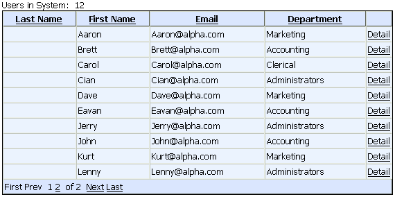

GRD_INTUSERLIST Grid Component
Purpose
Application administrators use the GRD_INTUSERLIST component to select internal users on the ASWUSERLIST.A5W page.

The GRD_INTUSERLIST component in the Browser
Description
The GRD_INTUSERLIST component is used by administrators to view a list of internal users. A link will open the ASWUSERONE.A5W page that shows the detail for a single record.
Containers
Notable Grid Control Property Settings
|
Control |
Property |
Description |
|
Emp_id |
Display Settings > Control type |
"Link" |
|
Link Properties > Display what in link |
"Static Text " | |
|
Link Properties > Link address type |
"Computed from fields in the grid" | |
|
Link Properties > Static Text |
"Detail" | |
|
Link Properties > Link address |
Opens the ASWUSERONE.A5WPRODUCTLIST.A5W page and displays the data that matches emp_id. aswuserone.a5w?emp_id={Emp_Id} |
See Also